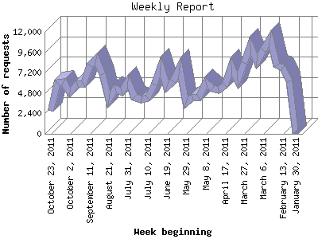

The Weekly Report identifies the activity for each week within the report
time frame. Remember that one page hit can result in several server requests
as the images for each page are loaded.
Note: Depending on the
report time frame for this report the first and last week may not represent
a full seven day week, resulting in lower hits.

| Week beginning | Number of requests | Number of page requests | |
|---|---|---|---|
| 1. | January 30, 2011 | 10 | 10 |
| 2. | February 6, 2011 | 6,187 | 521 |
| 3. | February 13, 2011 | 7,753 | 581 |
| 4. | February 20, 2011 | 8,022 | 591 |
| 5. | February 27, 2011 | 11,219 | 816 |
| 6. | March 6, 2011 | 9,846 | 704 |
| 7. | March 13, 2011 | 8,558 | 556 |
| 8. | March 20, 2011 | 10,370 | 662 |
| 9. | March 27, 2011 | 8,337 | 586 |
| 10. | April 3, 2011 | 6,293 | 471 |
| 11. | April 10, 2011 | 7,928 | 569 |
| 12. | April 17, 2011 | 5,702 | 437 |
| 13. | April 24, 2011 | 5,197 | 464 |
| 14. | May 1, 2011 | 5,332 | 454 |
| 15. | May 8, 2011 | 6,086 | 486 |
| 16. | May 15, 2011 | 4,318 | 361 |
| 17. | May 22, 2011 | 4,344 | 376 |
| 18. | May 29, 2011 | 3,701 | 339 |
| 19. | June 5, 2011 | 7,795 | 609 |
| 20. | June 12, 2011 | 6,179 | 556 |
| 21. | June 19, 2011 | 5,499 | 393 |
| 22. | June 26, 2011 | 7,946 | 586 |
| 23. | July 3, 2011 | 5,768 | 543 |
| 24. | July 10, 2011 | 4,221 | 404 |
| 25. | July 17, 2011 | 4,074 | 340 |
| 26. | July 24, 2011 | 4,276 | 357 |
| 27. | July 31, 2011 | 6,171 | 499 |
| 28. | August 7, 2011 | 4,961 | 470 |
| 29. | August 14, 2011 | 5,355 | 430 |
| 30. | August 21, 2011 | 4,073 | 358 |
| 31. | August 28, 2011 | 7,007 | 519 |
| 32. | September 4, 2011 | 8,852 | 683 |
| 33. | September 11, 2011 | 8,052 | 598 |
| 34. | September 18, 2011 | 5,874 | 494 |
| 35. | September 25, 2011 | 5,865 | 480 |
| 36. | October 2, 2011 | 4,871 | 433 |
| 37. | October 9, 2011 | 6,072 | 465 |
| 38. | October 16, 2011 | 6,010 | 465 |
| 39. | October 23, 2011 | 2,692 | 206 |
Most active week beginning February 27, 2011 : 816 pages sent. 11,219 requests handled.
Weekly average: 483 pages sent. 6,174 requests handled.
This report was generated on October 26, 2011 02:36.
Report time frame February 3, 2011 21:33 to October 25, 2011 23:38.
| Web statistics report produced by: analog 5.1 / Report Magic 2.21 |